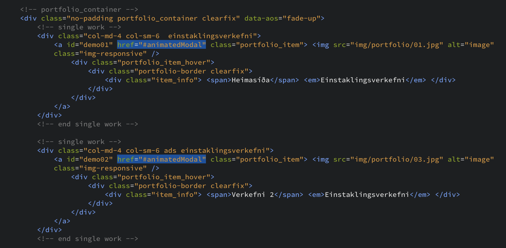
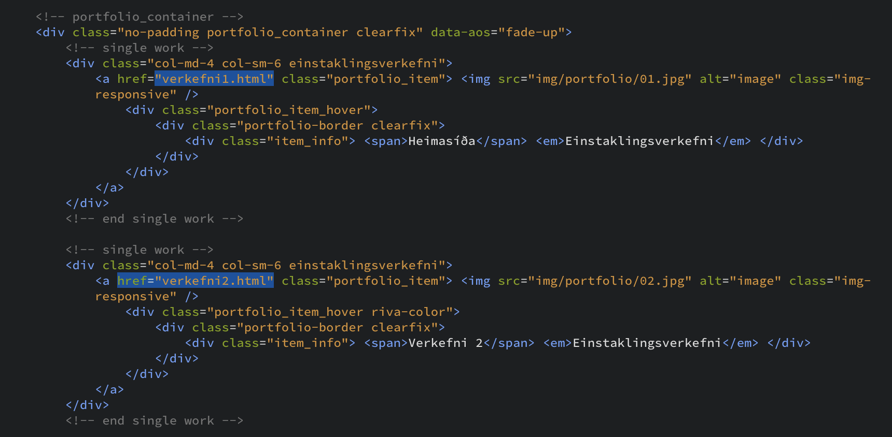

Verkefni 1 - Heimasíða
Fyrsta verkefnið í áfanganum framleiðsluferli er þessi heimasíða. Þessari heimasíðu er ætlað að sýna frá og útskýra öll þau verkefni sem unnin verða í námskeiðinu. Fyrir áramót bjó ég til online portfolio fyrir umsóknir um framhaldsnám í Bandaríkjunum. Það gerði ég í með WIX og slóðin á hana er kthorgrims.com. Ég ákvað að leggja strax metnað í heimasíðuna fyrir þennan áfanga með von um að ef hún tækist vel að ég gæti í ok áfangans notað sama sniðmát fyrir þessa síðu og fyrir það online portfolio sem ég hafði áður gert með WIX.
Fyrir verkefnið hafði ég aldrei unnið með HTML5 kóða en ég hef tekið áfanga um Java og Python ásamt því að hafa unnið aðeins í R. Ég treysti mér ekki til þess að skrifa upp nýja vefsíðu frá grunni svo ég leitaði af sniðmáti sem ég myndi gefa mér góðan grunn sem svo aðlagað að mínum þörfum. Ég byrjaði á því að skoða síðuna html5up.net sem Hafliði hafði mælt með en fann ekkert sniðmát þar sem hentaði mér fullkomlega. Svo ég fór inn á behance.net sem er ætluð listamönnum og hönnuðum til þess að sýna verkefnin sín. Þar fann ég þetta sniðmát sem búið var til af Ahmed Essa. Sniðmátið er frítt og hægt að hala niður möppu með öllum nauðsynlegum skjölum.
Til þess að lesa og breyta kóðanum notaði ég forritið Brackets. Það sem er þægilegt við Brackets er að með einum takka er hægt að sjá „live“ útgáfu af síðunni og því auðvelt að fikta sig áfram með kóðann og sjá hverjar breytingarnar verða.

Til þess að byrja með var frekar auðvelt að aðlaga síðuna til þess að hún myndi henta mér. Aðallega snerist það um að skipta um myndir, breyta textanum og annað smávægilegt. Stærsta vandamálið var við það hvernig verkefnin í portfolio hlutanum opnuðust. Í stað þess að vísa í nýja html skrá þá opnaðist „pop-up“ gluggi og sami glugginn fyrir öll verkefnin.
Eftir að hafa reynt að útfæra mismunandi glugga fyrir hvert verkefni fyrir sig án þess að takast það þá ákvað ég að eyða út þessum „pop-up“ gluggum. Fyrir hvert verkefni vísaði ég í nýja html ská. Fyrir hver verkefni væri þá nýtt skjal sem var ég byggði á sama grunni og index skránna.
Til þess að hýsa vefsíðuna og geyma kóðann notaði ég GitHub. Til þess að senda kóðann yfir á GitHub og halda utan um uppfærslur notaði ég GitHub Desktop. Í áfanganum þróun hugbúnaðar notuðum við það forrit og því ákvað ég að nota sömu aðferð núna því ég kunni á það.
Fyrsta skref er að búa til nýtt repository inn á GitHub. Ef maður er búinn að hala niður GitHub Desktop þá er manni boðið að setja repository upp í forritinu. Þess skref má sjá hér að neðan.

Þegar þessu er lokið verður til mappa í tölvunni þar sem skjölin fyrir þetta nýja repository eru geymd. Þá getur maður dregið öll skjölin fyrir vefsíðuna yfir í nýju möppuna. Næst opnar maður GitHub Desktop og skrifar í summary hverju er verið að breyta. Svo smellir maður á „Commit to master“ og svo Publish branch. Þá getur maður opnað GitHub á vafra og séð að öll skjölin fyrir vefsíðuna eru komin inn á GitHub.

Næsta skref er að setja vefsíðuna á netið svo hún sé aðgengileg með hlekk fyrir alla. Það er gert með því að fara í stillingar inn á GitHub, skrolla niður að GitHub Pages og velja master undir source. Þá verður til hlekkur sem hægt er að deila áfram og almenningur getur farið inn á titl þess að skoða vefsíðuna.